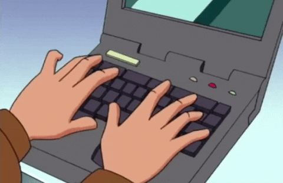

Similar to body paragraph 1, we have to organize the paragraph along the elements of SAY, MEAN, MATTER. This body paragraph will be answering the contrast part of the prompt.
Topic Sentence
Story 1 SAY
Story 1 MEAN
Story 1 MATTER
Story 2 SAY
Story 2 MEAN
Story 2 MATTER
How the 2 SAYS Connect to the Prompt
Concluding Sentence
Topic Sentence
The topic sentence of this body paragrpah should relate to the thesis along with the basic idea of how the body paragraph will answer the prompt.
Ex. Fear is shown with Charlie and Harry as they are willing to do anything in the name of fear.
Story 1 SAY
This will be the citation of the text evidence from Story 1.
Ex. “He felt his heart pounding, and he was afraid. He dug his fingers into the earth. 'Cora, what's happening? What is it? We've got to get away from this.' He ran across the garden. Each tree felt his touch. 'The roses. The roses. They're turning green!’” (Bradbury)
Story 1 MEAN
This will explain the textual evdidence from Story 1.
Ex. This means Harry noticed the changes that were occurring on Mars, and it ensued fear and panic into him. He got scared, and decided that he needed to build a rocket to survive and get away.
Story 1 MATTER
The MATTERS will be the longest parts of the paragraphs.
Ex. Harry reacting to these changes like this shows the fear that has been put into him. This connects to the prompt because it shows how they react to their situation and fear. The initial fear that Harry shows is carried on throughout the story. When he decides he wants to build a rocket, it shows how scared he is, and it affects his actions. He wanted to build the rocket to escape, and the fear had caused him to do this. This piece of text is important because it shows how his fear affected his actions. The sudden urge to leave the planet was caused by the panic of the thought of being stuck on Mars.
Story 2 SAY
Like the first say, this is the text evidence but from the 2nd story.
Ex. Sally (in a small, hesitant voice). It just doesn't seem right, though, keeping watch on them. Why . . . he was right when he said he was one of our neighbors. Why, I've known Ethel Goodman ever since they moved in. We've been good friends—
Charlie. That don't prove a thing. Any guy who'd spend his time lookin' up at the sky early - well there's something wrong with that kind of a person. (Serling)
Story 2 MEAN
This is the same as the mean for story 1 but is explaining the text evidence from story 2 instead.
Ex. This means that Charlie tried to blame others because of the fear that took control of him. Even though they have been good friends ever since they moved in. This proves that when fear takes someone over there is nothing that will stop them from finding a reason even if it is a very close relationship.
Story 2 MATTER
This is like the matter for story 1 but is showing how the text evidence from story 2 is important.
Ex. Charlie was so scared because they didn't know what lay in front of him. The greatest fear to humans is the unknown. That's exactly what they're faced with in this excerpt. This matters because years of friendship are crumbling right before Charlie's eyes, everyone has turned on each other because of fear and no one is on anyone's side. This connects to the prompt because it shows that Charlie is really scared and willing to do just about anything because of the fear that has slowly taken control of him. I picked this piece of text because it shows the length of blame Charlie is willing to go to to resolve his fear.
Connection To Prompt
Similar to the first body paragraph, this is one sentence that connects the two pieces of evidence back to the prompt.
Ex. These two pieces of evidence connect and prove the thesis since they show the similar reactions between the two characters after they both encounter a certain fear.
Conclusion Sentence
The conclusion sentence is the last sentence of the paragraph and is used to sum it all up. It is similar to the connection sentence but relates to the thesis as a whole instead of the pieces of evidence.

Concluding Transition Phrases:
All In All
In Conclusion
To Sum It All Up
To Wrap It All Up
To Conclude
In The End
To Finish
Ex. All in all, Harry's and Charlie's actions were completely altered because of the fear that was instilled into them.
Combining It All Up
Ex. Harry and Charlie both do immense things just because they are a little bit scared. “His face was cold. 'What's wrong?' asked his wife. 'Let's get back on the rocket.' 'Go back to Earth?' 'Yes! Listen!'…'What can we do?' 'Build a rocket, that's what!” “A rocket, Harry?...Oh, Harry!' 'But you must want to go back. Have you noticed the peach blossoms, the onions, the grass?’” (Bradbury)
This means that as soon as Harry reached Mars, he knew that something was wrong and wanted to go back to Earth. He fears what will happen if he stays as everything is changing and is willing to go as far as to build a rocket just to get out of Mars.
Everything around Harry is now slowly changing and Harry is scared about what might happen in the near future. This fear that he has is causing him to build a rocket from scratch. This matters because he is the only one who has the fear of Mars and the only person who has come to his senses. I picked this certain piece because it shows Harry's first impression of Mars and how he immediately wants to go back.This is important because Harry is actually thinking about building a rocket straight from scratch with no materials at his use.
(Charlie swings around, raises the gun, and suddenly pulls the trigger. The sound of the shot explodes in the stillness. The figure suddenly lets out a small cry, stumbles forward onto his knees)
Steve: (slowly looks up). It's Pete Van Horn. Don: (in a hushed voice). Pete Van Horn! He was just gonna go over to the next block to see if the power was on... You killed him, Charlie. You shot him dead!(Serling)
This means that Charlie was so scared that he ended up killing a person just because he didn't want anything to happen to him. The person who died was someone who just went to check on the next door community's electricity, but fear caused Charlie to shoot the man. He got so scared that he picked up a shotgun and shot a person.
All of Maple Street's power just went out and it is dark outside. This enforces fear into everyone on Maple Street as they don't know the sudden cause of the power outage. Fear causes Charlie to shoot a person and kill them. This matters because a little scare goes as far as making a person become a murderer. I picked this piece of text because it shows the extraordinary measure that Charlie goes to just because he is a little bit scared. This is important since fear is the entire reason why an innocent person has just died.
These two pieces of evidence connect and prove the thesis since they show the similar reactions between the two characters after they both encounter a certain fear.
All in all, Harry's and Charlie's actions were completely altered because of the fear that was instilled into them.